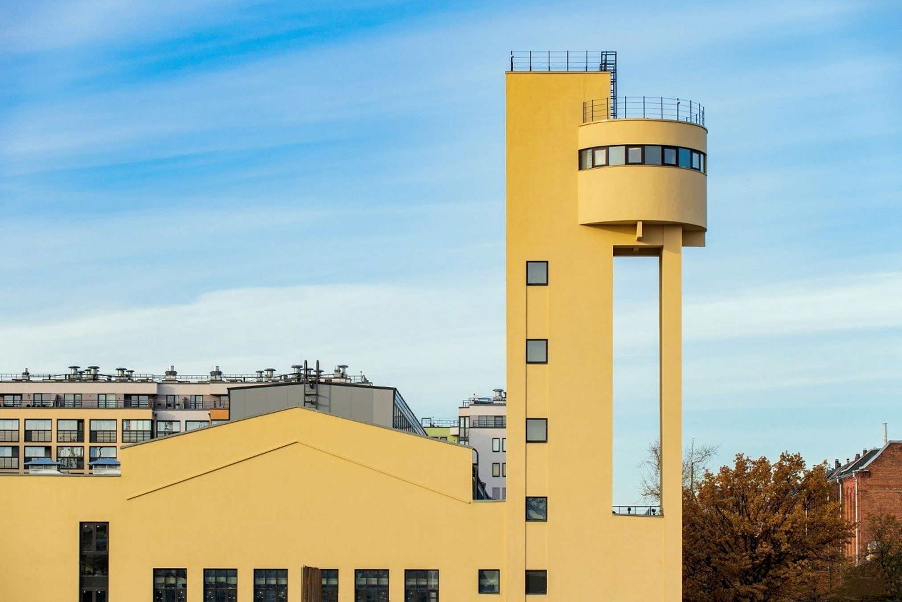
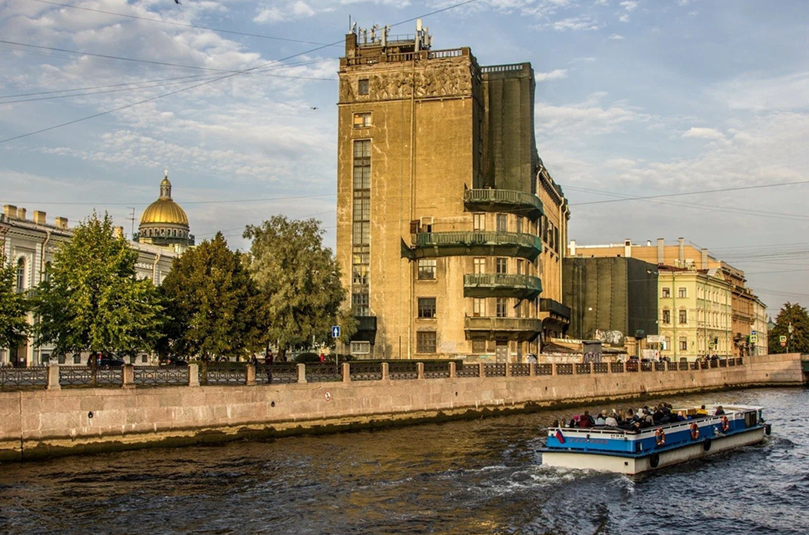
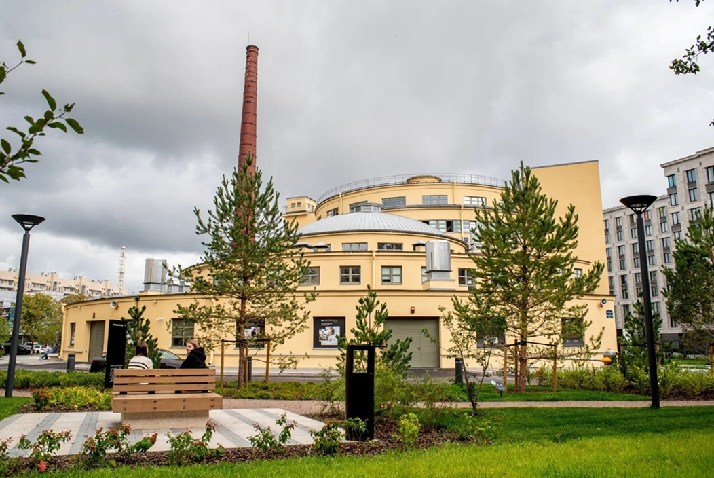

Стремление
Ленинградский конструктивизм
01 // Архитектура-трансформация
Дворец культуры работников связи
Дворец культуры работников связи на Большой Морской — уникальный памятник, вобравший два века истории. Его основа — немецкая кирха 1862 года. В 1930-е архитекторы Гринберг и Райц превратили колокольню в монументальный башенный пилон с огромным витражом, добавив скульптурные композиции на фасады.
В 1980-е ДК связи стал легендарной сценой ленинградского рока — здесь выступали «Аквариум» и «Кино». Стремление здесь — это умение меняться, не теряя лица.

Дворец культуры работников связи // Гринберг, Райц // 1932-1939 гг.
02 // Функция как форма
Левашовский Хлебозавод
Стремление может быть спрятано в инженерном гении. Левашовский хлебозавод — это не просто здание, а воплощение новой технологии.
Инженер Георгий Марсаков разработал уникальную систему кольцевого конвейера, и архитектура завода стала единым целым с этой технологией: производство шло по круглой автоматизированной линии сверху вниз.
Завод продолжал бесперебойно работать на протяжении всей блокады Ленинграда 1941–1944 годов, снабжая город хлебом. Недавно здание отреставрировали, и теперь внутри работает культурный центр с мемориалом. Стремление здесь — это способность сохранять форму и функцию даже в самых тяжелых обстоятельствах.

Левашовский Хлебозавод // Георгий Марсаков // 1933 г.
03 // Парящая конструкция
Водонапорная башня завода "Красный Гвоздильщик"
Стремление может быть лёгким, почти невесомым. Водонапорная башня на Васильевском острове — один из самых эффектных промышленных объектов Ленинграда.
Её автор, архитектор-визионер Яков Чернихов, которого называли «советским Пиранези», использовал все возможности железобетона, чтобы создать ощущение, будто резервуар с водой парит в воздухе. Сама же башня своими очертаниями напоминает гвоздь — символически отсылая к названию завода. Стремление здесь — это полёт инженерной мысли, ставший архитектурой.

Водонапорная башня завода "Красный Гвоздильщик" // Яков Чернихов // 1931 г.
04 // Перейти в нужное место

Дворец культуры работников связи
Левашовский Хлебозавод